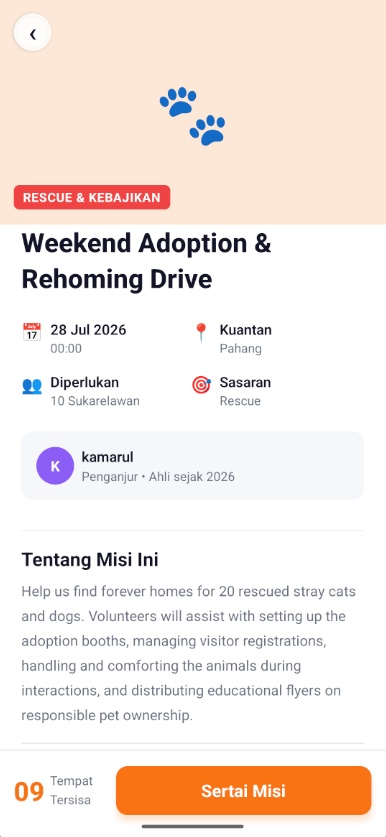
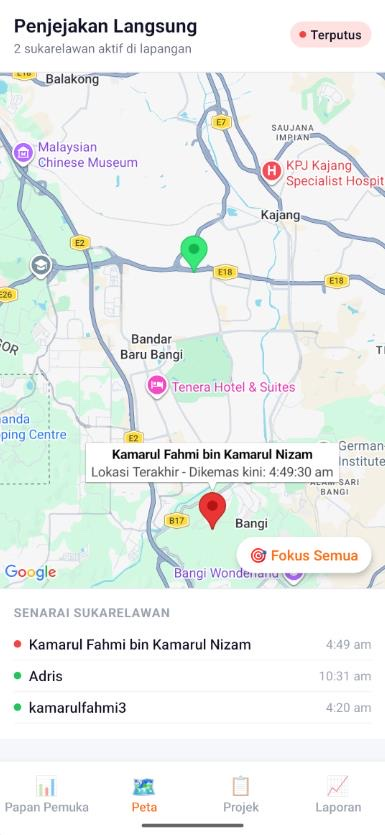
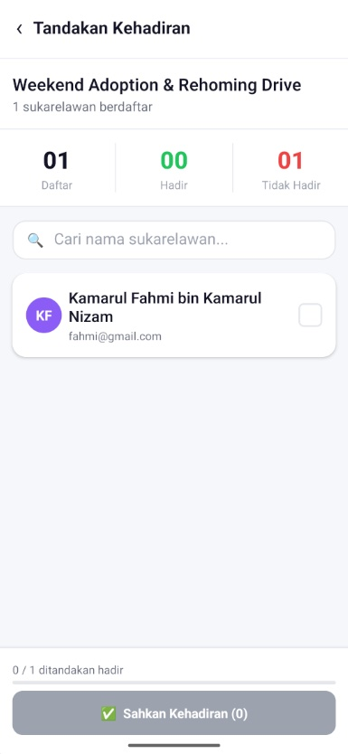
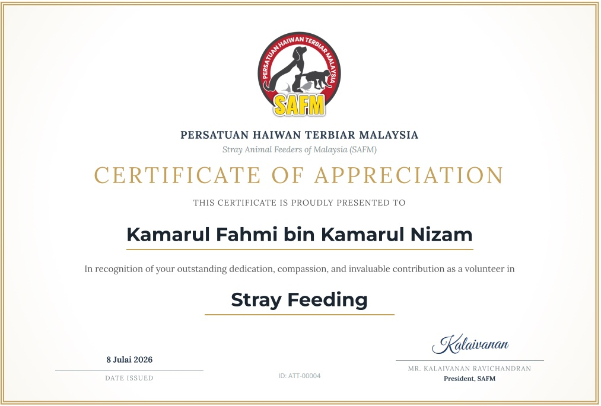
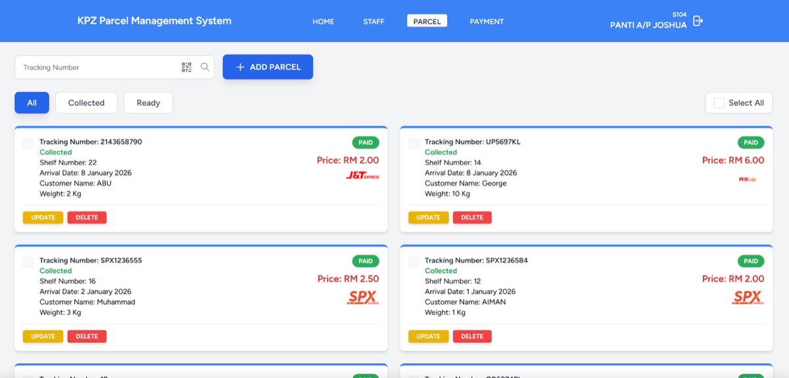
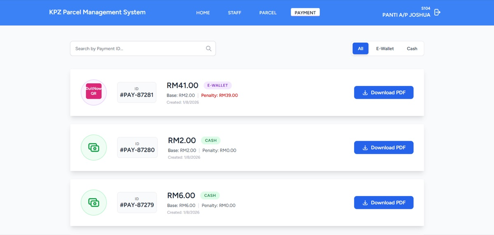
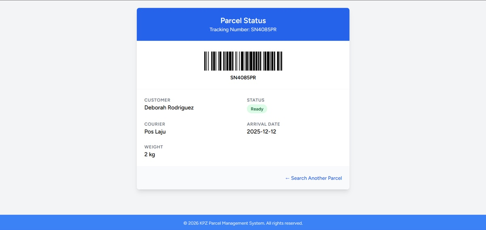
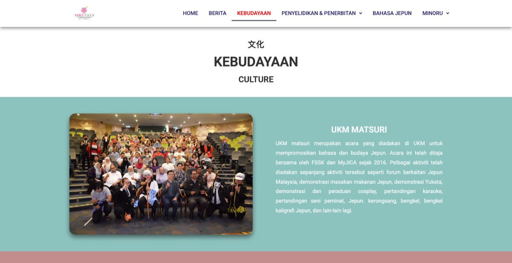
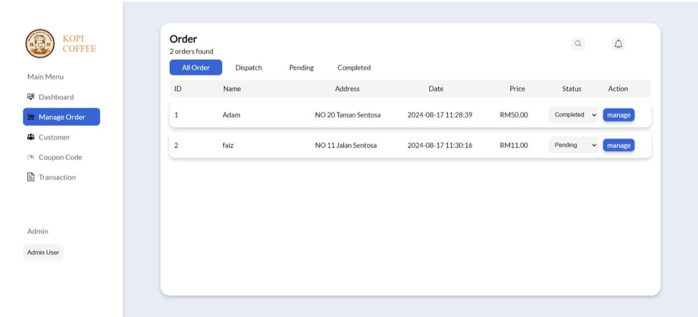
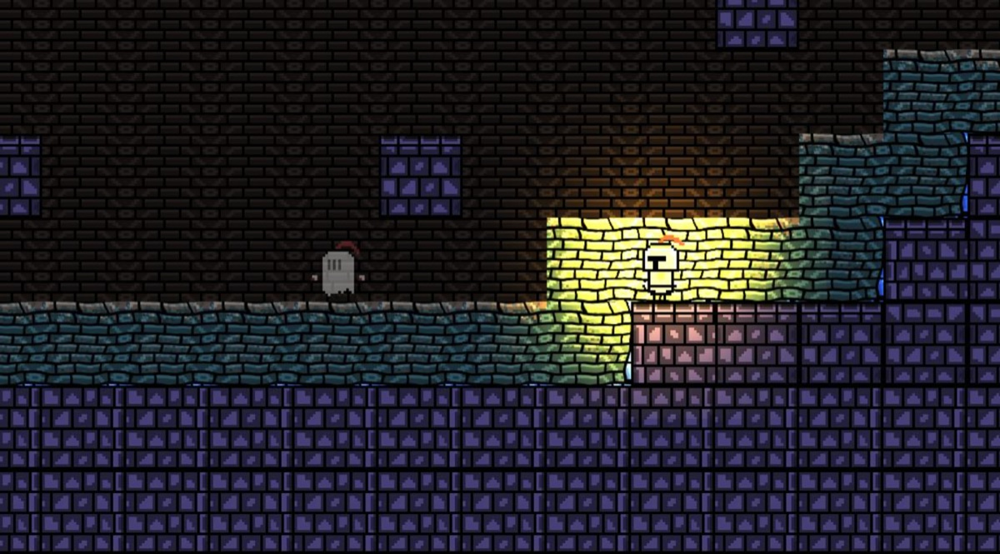

Back-end and cloud · Kuala Lumpur
I build back ends and the infrastructure they run on. At Versa, a Malaysian savings and investment app, I took our team's internal AI tool from a developer's laptop to AWS, with the CDK and keyless deploys, and I'm writing the Terraform for a temporary GCP load-test environment. I study Software Engineering at UKM (CGPA 3.83) as a Yayasan TM scholar. In September 2026 I joined a quantum research camp at the University of Tsukuba in Japan.
Experience
nowVersaDeveloper intern
- Moved an internal AI QA tool to AWS (CDK, OIDC deploys)
- Terraform for a temporary GCP load-test environment
- Extended a shared schema package, released with Changesets (pre-release, then versioned)
- Support for the new 2026 MyKad in eKYC (in code review)
nowGuru Muda, UKMProgramming mentor
- Mentored a cohort of 20 students over a year on programming fundamentals and logic
- Built 12 learning modules with the faculty's academic committee
Projects
5 featured and 11 more. Open a row for details
May 2026 HWK Haiwan Kita Fastify · Prisma · MySQL · Expo · Docker ABack end Shipped
My final-year project at UKM: a volunteer management app for Persatuan Haiwan Terbiar Malaysia (SAFM), replacing the Excel sheets and WhatsApp groups they used to coordinate volunteers. Members plan rescue, feeding and adoption missions; volunteers join them, share their live location during a mission, and download a certificate afterwards. I built both the API and the app.
- Fastify API in TypeScript with JWT auth, Zod validation, rate limiting and Helmet; MySQL through Prisma, all in Docker
- Three roles: volunteers join missions and track their history, members propose missions and confirm attendance, admins approve projects and filter volunteers by location and task type
- Live volunteer locations on the admin map over Socket.IO, for coordinating rescues
- Certificates of appreciation generated automatically as PDFs with headless Chromium
- Built over 28 weeks with Agile, then tested with black-box and usability testing with SAFM admins, members and volunteers. Supervised by Ts Rohizah Abd Rahman
/auth · /api/v1
live GPS
127.0.0.1:8080
network
network




Aug 2026 QAA AI QA tool on AWS AWS CDK · Lambda · API Gateway · DynamoDB BCloud Shipped
Work project at Versa. The QA team's internal AI tool for drafting test cases only ran on a developer's laptop. I got it deploying to AWS as a serverless app, then fixed what broke on a real account.
- Keyless deploys. GitHub Actions deploys to AWS through an OIDC role, so no long-lived AWS keys are stored in GitHub.
- Working on a real account. I fixed the problems that only appear in a live AWS account, such as bucket naming, CORS, WebSocket permissions, IAM and log clean-up.
- Leaner and steadier. I cut the main Lambda's memory from 1,536 MB to 512 MB, and made rapid or duplicate messages queue up one at a time per conversation.
- Cleaner exports. I improved the Google Sheets export with stable rows, readable test-case IDs and tidy formatting.
Team project at Versa; my part was the AWS deployment and the fixes above. The code is private. Read the full story
web app
Sep 2026 LTS Load-test staging Terraform · GCP · MongoDB Atlas BCloud In progress
Work project at Versa. The QA team needs to load-test our services against something that behaves like production, without touching production. I'm building the Terraform for a temporary staging environment on GCP and MongoDB Atlas, plus a tool that works out what each service needs.
So far I've built:
- Staging from production configs. Staging versions of the Pub/Sub, IAM and Cloud Tasks setups, generated from the production Terraform values and validated before anything is applied.
- Real data shape, no personal data. A short-lived MongoDB Atlas cluster restored from a production backup, with personal data masked by tested rules and checked before any service connects.
- Service catalog. A tool that reads each service's code to find what it publishes, subscribes to and calls over HTTP, and audits that map against the current code.
- Safe by default. The generated staging values refuse to target the production project, and the whole environment is designed to be destroyed after each test.
Work project at Versa, still in progress. The code is private.
plan · apply · destroy
plan · apply · destroy
Oct 2026 PAL Game server on GCP Docker Compose · Bash · Google Cloud BCloud Shipped
A dedicated Palworld game server for friends on a Google Cloud VM, run with Docker Compose and documented so it can be rebuilt from a fresh machine.
- One-command first run that installs Docker and starts the server
- Daily backups and restarts on cron, with optional upload to Google Drive
- Discord messages when players join and leave
- Scripts to import an existing world and migrate a co-op host's character
game
Steam query
./palworld
daily
Nov 2025 KPZ KPZ Parcel Laravel · React · Kotlin · Docker ABack end Built
A team project with four classmates for the KPZ one-stop centre's parcel counter. It ran on one local computer with manual key-in, and customers often couldn't tell whether their parcel had arrived. We replaced it with a web system with barcode scanning and real-time parcel tracking, plus a native Android app for recipients.
- Three roles: managers handle staff, parcels and payments; staff log parcels and payments; customers check parcel status with their tracking number
- A unique collection barcode for every parcel, and a performance dashboard for managers
- Payments by e-wallet or cash, with PDF invoices
- Laravel 11 REST API with token auth, an Inertia and React dashboard styled with Tailwind, MySQL, hosted on Google Cloud
- Android app in Kotlin and Jetpack Compose, calling the same API through Retrofit
- Passed user acceptance testing with three testers
pages · tracking
/api/parcels/{id}
app:9000
db:3306



11 more projects
Oct 2026 YTM YTM Claim Filler Python · PyMuPDF · pytest ABack end Shipped
A command-line tool that fills in the monthly Yayasan TM practical-training claim form (BTEPV4). Set it up once, then each month it is one command.
- Works out the working days in the training period, skipping weekends and the state's public holidays
- Writes Malay day names, times and hours into the stamped PDF with PyMuPDF, as editable text boxes
--skipand--workflags for leave and public holidays worked- Guided setup, a pytest suite, and step-by-step instructions for Windows, Mac and Linux
config.toml
Aug 2026 AWS Serverless on AWS AWS CDK · Lambda · S3 · CloudFront BCloud Learning
A learning project in infrastructure as code: four AWS stacks in an Nx monorepo, written in TypeScript with the CDK and deployed by GitHub Actions.
- Backend, console and mobile stacks, each an API Gateway in front of three Node.js Lambdas
- A frontend stack on a private S3 bucket behind CloudFront, which reads the backend's API URL from SSM Parameter Store at deploy time
- GitHub Actions assumes an AWS role over OIDC and deploys only the stacks that changed, backend first
read at deploy
site · config.json
/backend/lambda1–3
May 2026 MYB MY Buddy Next.js · Vercel AI SDK · Zod DAI Built
An AI day-trip planner for Malaysia, starting with Melaka. Swipe through attractions, set arrival and departure times, and it returns three routes: Optimized, Makan-focused and Santai.
- Tool calling and structured output with the Vercel AI SDK, validated with Zod
- Adds 20–30% to every stop for parking and queues, and drops low-priority stops when time runs out
- Gemini for the card deck and itineraries, with DeepSeek as a fallback, and property-based tests on the itinerary engine
- Built in about five hours with a team of four at the Generative AI Vibe Hackathon 2026 (Cognizant challenge), using Kiro IDE; won 3rd place
/api/generate-deck
/api/generate-itinerary
Nov 2025 RAD Affordability Radar Gemini · Express · Google Maps DAI Built
Enter your monthly income and a place you want to live near. A Gemini agent geocodes the place and returns the 10 closest homes you can afford at a 50% debt-service ratio.
- Gemini function calling wired to a recommendation tool in an Express server
- Runs on a 2025 dataset of Malaysian house prices, geocoded with Google Maps
Oct 2025 CTR Citra Bot Python · discord.py · Selenium ABack end Built
A Discord bot that drives a browser with Selenium to pull course listings from the university portal into a chat.
Aug 2025 RFL On-chain Raffle Solidity · Foundry · Chainlink EWeb3 Testnet
A lottery on Ethereum where nobody can rig the draw. Chainlink VRF picks the winner and Chainlink Automation closes each round.
- Deployed and run on the Sepolia testnet with Foundry scripts
- Foundry unit tests with mocks, running in GitHub Actions
- A small ethers.js front end to connect a wallet and enter
getRecentWinner()
performUpkeep
fulfillRandomWords
May 2025 MRS Marshall Assist Machine learning · LSTM DAI Prototype
Recognises airplane marshalling gestures from video and gives trainee marshallers real-time feedback on their signals. Our first machine learning project, built in six hours with a team of four.
- LSTM network that classifies gesture sequences from video
- Won 1st place at Hackathon Za'ba 2025

Oct 2024 SKR Sakuraya Website WordPress CFront end Live
The official website of Sakuraya, the Japan–Malaysia sociocultural centre at UKM, covering its activities, news, events, and research and publications.
- Four days, new tool. I built the first version in under four days on a tight deadline, learning WordPress as I went.
- Working inside UKM's setup. The centre's lecturer didn't know how the site was managed, so I worked with UKM's IT centre (PTM) over many calls to get access and learn how UKM runs its WordPress sites.
- Kept it going. I designed the pages and kept the site updated from October 2024 to August 2025.

Aug 2024 COF Kopi Coffee Laravel · PHP · MySQL ABack end Built
My first solo Laravel project: a café ordering site with product browsing, a shopping cart, receipts, customer accounts and product management.
- Laravel 11 with Blade views and Eloquent models tying orders to user profiles
- Role-based access control so admins and customers sign in through the same page

Aug 2024 CGA Conga Buds Godot · GDScript FGames Live
May 2024 LNK Lonesome Knight Godot · GDScript FGames Live
A game made with a team of four for UM Game Jam 2024. It placed 4th at UM Game Jam 2024 and won a consolation prize.

Education
Degree, scholarship and programmes
Awards
2 wins · 11 results since 2023
8 more results
Skills
Tools from my projects and work, plus certificates
Back endAPIs and data
- Node.js
- Fastify
- Express
- Laravel
- Prisma
- MySQL
- MongoDB
- Mongoose
- Socket.IO
- Zod
Cloud & DevOpsShip it and run it
- Docker
- Docker Compose
- nginx
- Terraform
- AWS CDK
- AWS Lambda
- API Gateway
- DynamoDB
- S3
- CloudFront
- Cognito
- Google Cloud (GCP)
- MongoDB Atlas
- GitHub Actions
- Bash
- Linux servers
- cron
Mobile & front endWhat people touch
- React Native
- Expo
- React
- Next.js
- Kotlin
- Jetpack Compose
- Tailwind CSS
- Flutter
- Figma
AIAgents that use tools
- Vercel AI SDK
- Gemini API
- OpenAI API
- Tool calling
- Structured output
Web3Smart contracts
- Solidity
- Foundry
- Chainlink VRF
- Chainlink Automation
- ethers.js
LanguagesDay to day
- TypeScript
- JavaScript
- Python
- PHP
- C++
- GDScript
Certificates2024 to 2026
- IBM · Introduction to DevOps
- IBM · Agile development and Scrum
- Cisco · Introduction to Cybersecurity
3 more certificates
- Google · Foundations of project management
- Google · Data analytics, 4 courses
- Google · Foundations of UX design